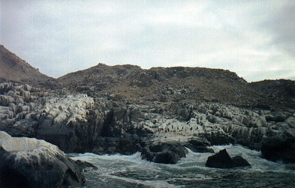
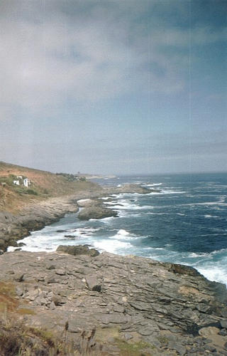
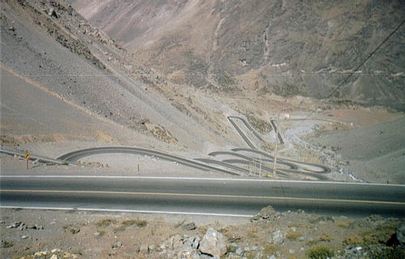
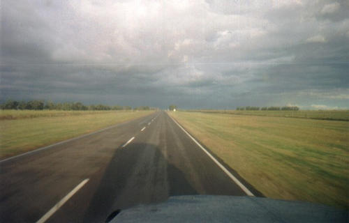
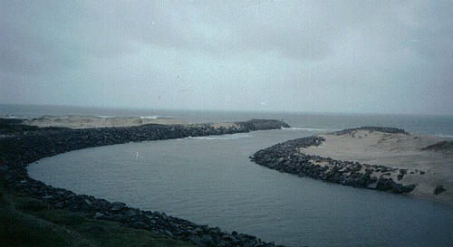

Deixando o deserto para trás e descendo o litoral chileno, acabamos chegando no parque pan de azucar. É um mini povoado na praia, de pescadores (15 moradores) com uma ilha próxima que tem pingüins (pontos pretos na foto), gaivotas, pelicanos e leões marinhos.
Com os locais, pode-se fazer um passeio de barco e chegar perto da ilha, para observar os animais. Na praia tem um camping com churrasqueiras e sombreros individuais. Bom lugar para acampar. Ah! Dizem que o nome do parque é devido à ilha se parecer com o nosso morro do pão de açúcar do rio, mas tipo, nada a ver :)

Pingüins na ilha pan de azúcar
Local: Parque pan de azucar - CHILE - 2000
Nem me lembro mais que lugar que é o dessa foto aí, só sei que é um lugar massa. A maioria das praias que vimos mais ao sul, chegando na altura de Santiago são praias de gente rica, com condomínios fechados, carros importados etc. É um contraste grande com toda a crueza e simplicidade do deserto que estávamos acostumados até então...

Uma praia do oceano pacífico
Local: Algum lugar entre los vilos e viña del mar - CHILE - 2000
E aqui estão eles, os famosos caracóis chilenos! São 29 curvas fechadas de 180 graus, num vai e vem que sobe uma montanha muito alta, algo inacreditável, muito legal. E aqui como é o único canal rodoviário de comunicação entre Santiago e a argentina, então o tráfego é intenso, de caminhões, ônibus e carros.

Os famosos caracóis chilenos
Local: Estrada de Santiago a Mendoza - CHILE - 2000
Essa foto resume TODA a paisagem das estradas argentinas, tanto no norte, na região do chaco, para ir de posadas à Salta, quanto aqui no sul, para chegar à capital federal. reta, reta, reta, sem curvas, sem subidas, sem descidas. Uma planície interminável, sem paisagem pra apreciar. um saco.
Quem tem piloto automático no carro pode ligar e dormir que não vai perder coisa alguma... Ah! É claro, a única quebra da monotonia da viagem são os MALDITOS pedágios argentinos!! Além de caros, tem um monte, e a estrada nem é assim tão massa pra valer a grana...

Maldita estrada reta argentina
Local: Estrada de Mendoza para Buenos Aires - ARGENTINA - 2000
Depois de cruzar a argentina, entramos no uruguai por fray bentos, e após cruzar algumas cidadezinhas muito aconchegantes do interior, descemos até colonia del sacramento, e passando pela capital (muito tranqüila), fizemos toda a costa, conhecendo diversas praias. A viagem está boa, mas precisamos voltar pra casa.
Pra quem não conhece, aí está, o sul do sul do Brasil. A ponta da direita já é o uruguai. Como era de se esperar, nada de especial. Nenhuma placa, nem estátua, nada. Tinha uma pedra lá, mas as placas com os dizeres foram roubadas...
Foi só botar o pé no Brasil que começou a chover. Nosso sangue Curitibano estava demorando pra se manifestar e chamar a chuva :)

Ponta do chuí: o sul do sul do Brasil
Local: Chuí - BRASIL - 2000